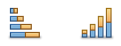

使用 | 目的 |
柱形图或条形图 | 比较在不同日期或不同条件下取得的两个或多个数值。适用于比较增加与减少、最高与最低、数量或频率。 单系列柱形图或条形图适用于比较某个数据类别内的值，如单个产品的月销售量。多系列柱形图或条形图适用于比较数据的类别，如多个产品的月销售量。 使用折线图可比较 15 个以上的数据点。 |
 堆叠柱形图或堆叠条形图 | 将部分与整体进行比较。图表中的每个列或栏会比较某个类别内的多个数据点。使用堆叠条形图可比较数年以来产品的年度销售数字。每栏的每一个段都会比较特定的产品销售，每个栏显示每年的产品销售总计，并且整个图表会比较所有年的销售总计。 要绘制单个数据系列（如一个区域内的销售）的图表，请使用饼图。 |
正/负柱形图 | 比较正值与负值。正值显示在中点（默认情况下为零）上方，而负值显示在中点下方。您可以设置自定义中点。使用正/负图可将赢利与损失进行比较或跟踪一段时间内的生产力。 |
饼图 | 显示各个数据系列的值与图表显示的系列中所有数据总和的关系。最适于显示单个数据系列内的比例。您可以显示每个数据点（饼图的切片）的百分比值。 当至少部分切片代表整体的 25% 到 50% 时，饼图最有效。由于很难比较饼图中的各个部分或者在饼图间比较数据，因此通常在仅需一般比较时才使用饼图。 |
折线图 | 显示随时间不断变化（趋势）的数据，如历史财务信息。折线图使用折线连接一连串数据点。每个数据点都表示一个单独的度量。折线图适用于显示一端时间内数据的增加或减少。 使用折线图可比较四个区域在一年内的月销售总计。将相同的数据系列用条形图表示会使按区域比较总计变得容易。要显示所有区域内的上升和下降趋势或周期，请使用折线图。 |
面积图 | 显示随时间发生趋势性变化的数据，同时突出显示数据点之间的高低位置和移动。在包含多个数据系列的图表中，各个数据系列之间的数量差会在图表中用不同的颜色突出显示。 |
散点图 | 将 x 和 y 坐标绘制为单个值，以显示关联模式。如果数据值的趋势从左向右上升，则会将该趋势视为正值。如果趋势从左向右下降，则会将该趋势视为负值。如果数据点没有显示出明显的坡度，则会将数据视为不关联。散点图可以比较大量的数据点，而与时间无关。使用散点图可比较一天内随着温度的变化在餐馆内售出的饮料数。 |
气泡图 | 将 x 和 y 坐标绘制为带有第三个数据特征（每个气泡的半径）的单个值。气泡图会从大小（量值）的角度比较单个数据点。使用气泡图可通过比较产品的销售数量、每个产品的销售数字以及每个数据点中销售总计百分比，来比较市场占有率。 |